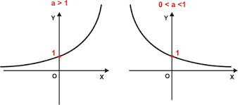

FUNÇÕES EXPONENCIAIS
O QUE SÃO FUNÇÕES EXPONENCIAIS?
A Função Exponencial é utilizada para descrever o comportamento de várias situações no nosso dia a
dia. Podemos observá-la na matemática financeira, em situações que envolvem juros compostos,
em reprodução de cultura de bactérias, e até mesmo o comportamento de novos casos da covid-19, durante a
pandemia.
A lei de formação da função exponencial é f(x) = ax, podendo gerar um
gráfico crescente ou
decrescente, dependo do valor da base “a”. A função inversa da
função exponencial é a função logarítmica.
Podemos definir como Função Exponencial uma função onde seu domínio
é o conjunto dos números
reais, e seu contradomínio é o conjunto dos números reais positivos diferentes de 0.
GRÁFICO
• Para uma função do tipo f(x) = a
x
, a curva que a representa está toda
acima do eixo das abscissas, pois a
x
será sempre maior do que zero para
todo x.
• Corta o eixo das ordenadas no ponto (0,1)
•
f(x) = a
x é crescente se a > 1 e decrescente se 0 < a < 1
.

Como construir o
GRÁFICO
?
1º: Analisar se a curva será crescente ou
decrescente a partir do valor da
base “a” da potência. .
2º: Encontrar pontos da curva, atribuindo valores a
x. Sugere-se usar -2, -
1, 0, 1 e 2. Se não forem suficientes, ampliar a quantidade de pontos.
CLASSIFICAÇÃO: Fácil